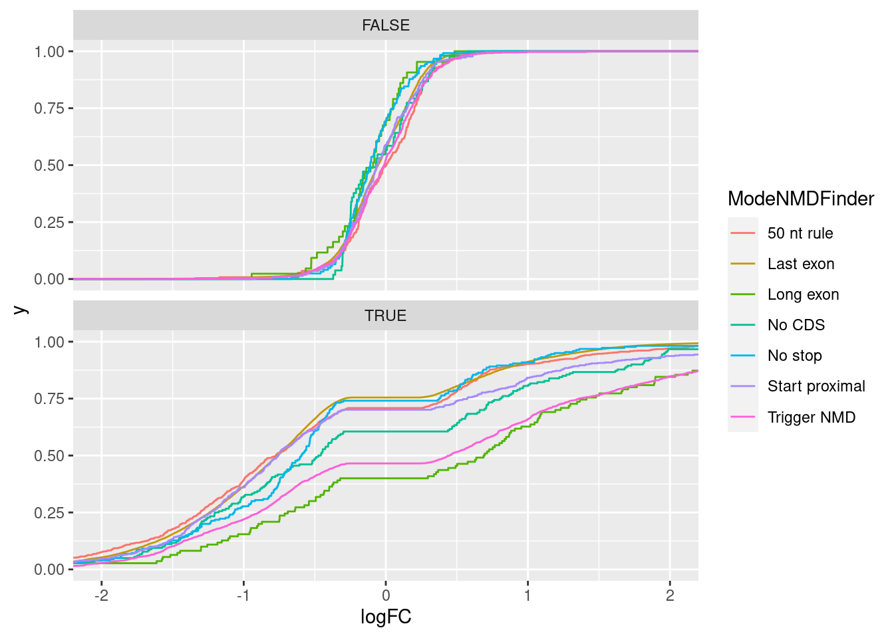
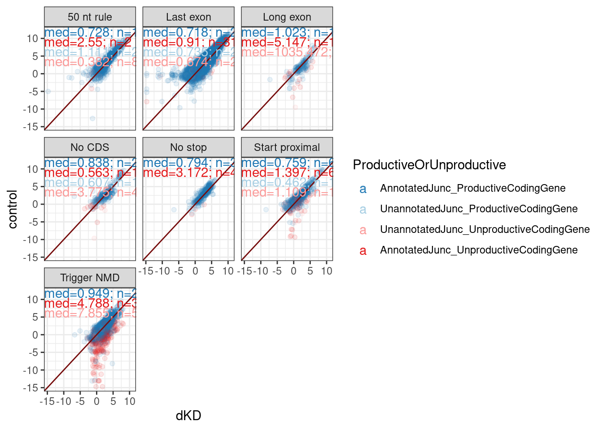

2024-04-18_RelativeNMDEfficiency
2024-04-18
Last updated: 2024-04-24
Checks: 6 1
Knit directory:
ChromatinSplicingQTLs/analysis/
This reproducible R Markdown analysis was created with workflowr (version 1.7.0). The Checks tab describes the reproducibility checks that were applied when the results were created. The Past versions tab lists the development history.
The R Markdown is untracked by Git. To know which version of the R
Markdown file created these results, you’ll want to first commit it to
the Git repo. If you’re still working on the analysis, you can ignore
this warning. When you’re finished, you can run
wflow_publish to commit the R Markdown file and build the
HTML.
Great job! The global environment was empty. Objects defined in the global environment can affect the analysis in your R Markdown file in unknown ways. For reproduciblity it’s best to always run the code in an empty environment.
The command set.seed(20191126) was run prior to running
the code in the R Markdown file. Setting a seed ensures that any results
that rely on randomness, e.g. subsampling or permutations, are
reproducible.
Great job! Recording the operating system, R version, and package versions is critical for reproducibility.
Nice! There were no cached chunks for this analysis, so you can be confident that you successfully produced the results during this run.
Great job! Using relative paths to the files within your workflowr project makes it easier to run your code on other machines.
Great! You are using Git for version control. Tracking code development and connecting the code version to the results is critical for reproducibility.
The results in this page were generated with repository version 420d8dd. See the Past versions tab to see a history of the changes made to the R Markdown and HTML files.
Note that you need to be careful to ensure that all relevant files for
the analysis have been committed to Git prior to generating the results
(you can use wflow_publish or
wflow_git_commit). workflowr only checks the R Markdown
file, but you know if there are other scripts or data files that it
depends on. Below is the status of the Git repository when the results
were generated:
Ignored files:
Ignored: .DS_Store
Ignored: .Rhistory
Ignored: .Rproj.user/
Ignored: analysis/.Rhistory
Ignored: code/.DS_Store
Ignored: code/.RData
Ignored: code/._report.html
Ignored: code/.ipynb_checkpoints/
Ignored: code/.snakemake/
Ignored: code/APA_Processing/
Ignored: code/Alignments/
Ignored: code/ChromHMM/
Ignored: code/ENCODE/
Ignored: code/ExpressionAnalysis/
Ignored: code/ExtractPhenotypeBedByGenotype.py
Ignored: code/FastqFastp/
Ignored: code/FastqFastpSE/
Ignored: code/FastqSE/
Ignored: code/FineMapping/
Ignored: code/GTEx/
Ignored: code/Gencode.v34.6Colors.bed.gz
Ignored: code/Genotypes/
Ignored: code/H3K36me3_CutAndTag.pdf
Ignored: code/IntronSlopes/
Ignored: code/LR.bed
Ignored: code/LR.seq.bed
Ignored: code/LongReads/
Ignored: code/MYB.tracks.ini
Ignored: code/Metaplots/
Ignored: code/Misc/
Ignored: code/MiscCountTables/
Ignored: code/Multiqc/
Ignored: code/Multiqc_chRNA/
Ignored: code/NonCodingRNA/
Ignored: code/NonCodingRNA_annotation/
Ignored: code/PairwisePi1Traits.P.all.txt.gz
Ignored: code/PeakCalling/
Ignored: code/Phenotypes/
Ignored: code/PlotGruberQTLs/
Ignored: code/PlotQTLs/
Ignored: code/ProCapAnalysis/
Ignored: code/QC/
Ignored: code/QTL_SNP_Enrichment/
Ignored: code/QTLs/
Ignored: code/RPKM_tables/
Ignored: code/ReadLengthMapExperiment/
Ignored: code/ReadLengthMapExperimentResults/
Ignored: code/ReadLengthMapExperimentSpliceCounts/
Ignored: code/ReferenceGenome/
Ignored: code/Rplots.pdf
Ignored: code/Session.vim
Ignored: code/SmallMolecule/
Ignored: code/SplicingAnalysis/
Ignored: code/TODO
Ignored: code/Tehranchi/
Ignored: code/alias/
Ignored: code/bigwigs/
Ignored: code/bigwigs_FromNonWASPFilteredReads/
Ignored: code/config/.DS_Store
Ignored: code/config/._.DS_Store
Ignored: code/config/.ipynb_checkpoints/
Ignored: code/config/config.local.yaml
Ignored: code/dag.pdf
Ignored: code/dag.png
Ignored: code/dag.svg
Ignored: code/data/
Ignored: code/debug.ipynb
Ignored: code/debug_python.ipynb
Ignored: code/deepTools/
Ignored: code/featureCounts/
Ignored: code/featureCountsBasicGtf/
Ignored: code/genome_config.yaml
Ignored: code/gwas_summary_stats/
Ignored: code/hyprcoloc/
Ignored: code/igv_session.xml
Ignored: code/isoseqbams/
Ignored: code/log
Ignored: code/logs/
Ignored: code/notebooks/.ipynb_checkpoints/
Ignored: code/pi1/
Ignored: code/polyA.Splicing.Subset_YRI.NominalPassForColoc.bed.bgz
Ignored: code/rules/.ipynb_checkpoints/
Ignored: code/rules/OldRules/
Ignored: code/rules/notebooks/
Ignored: code/salmontest/
Ignored: code/scratch/
Ignored: code/scripts/.ipynb_checkpoints/
Ignored: code/scripts/GTFtools_0.8.0/
Ignored: code/scripts/__pycache__/
Ignored: code/scripts/liftOverBedpe/liftOverBedpe.py
Ignored: code/snakemake.dryrun.log
Ignored: code/snakemake.log
Ignored: code/snakemake.sbatch.log
Ignored: code/snakemake_profiles/slurm/__pycache__/
Ignored: code/test.introns.bed
Ignored: code/test.introns2.bed
Ignored: code/test.log
Ignored: code/tracks.xml
Ignored: data/.DS_Store
Ignored: data/GWAS_catalog_summary_stats_sources/._list_gwas_summary_statistics_6_Apr_2022-10.csv
Ignored: data/GWAS_catalog_summary_stats_sources/._list_gwas_summary_statistics_6_Apr_2022-11.csv
Ignored: data/GWAS_catalog_summary_stats_sources/._list_gwas_summary_statistics_6_Apr_2022-2.csv
Ignored: data/GWAS_catalog_summary_stats_sources/._list_gwas_summary_statistics_6_Apr_2022-3.csv
Ignored: data/GWAS_catalog_summary_stats_sources/._list_gwas_summary_statistics_6_Apr_2022-4.csv
Ignored: data/GWAS_catalog_summary_stats_sources/._list_gwas_summary_statistics_6_Apr_2022-5.csv
Ignored: data/GWAS_catalog_summary_stats_sources/._list_gwas_summary_statistics_6_Apr_2022-6.csv
Ignored: data/GWAS_catalog_summary_stats_sources/._list_gwas_summary_statistics_6_Apr_2022-7.csv
Ignored: data/GWAS_catalog_summary_stats_sources/._list_gwas_summary_statistics_6_Apr_2022-8.csv
Ignored: data/GWAS_catalog_summary_stats_sources/._list_gwas_summary_statistics_6_Apr_2022.csv
Ignored: data/Metaplots/.DS_Store
Ignored: output/~$20240223_NumQTLs_edited.xlsx
Untracked files:
Untracked: analysis/2024-04-18_RelativeNMDEfficiency.Rmd
Untracked: analysis/test.rmd
Untracked: output/20240322_ResponseToReviewerMostCommonJuncContexts.tsv.gz
Unstaged changes:
Modified: analysis/2024-01-17_CheckYangsJunctionAnnotator.Rmd
Modified: analysis/2024-03-07_InvestigateTranslatedLongReads.Rmd
Modified: analysis/MakeFinalFigs_Fig2.Rmd
Modified: analysis/MakeFinalFigs_Fig4.Rmd
Note that any generated files, e.g. HTML, png, CSS, etc., are not included in this status report because it is ok for generated content to have uncommitted changes.
There are no past versions. Publish this analysis with
wflow_publish() to start tracking its development.
Intro
Similar to Lindeboom 2019, I see some groups of unproductive junctions are more unstable than others as assessed by (naRNA/steady-state) or (dKD/control)… Here I want to reproduce that analysis, but also incorporate some significance filters to not consider the juncs with fold changes that are not significant based on just a couple counts.
Analysis
library(data.table)
library(tidyverse)── Attaching packages ─────────────────────────────────────── tidyverse 1.3.1 ──✔ ggplot2 3.3.6 ✔ purrr 0.3.4
✔ tibble 3.1.7 ✔ dplyr 1.0.9
✔ tidyr 1.2.0 ✔ stringr 1.4.0
✔ readr 2.1.2 ✔ forcats 0.5.1── Conflicts ────────────────────────────────────────── tidyverse_conflicts() ──
✖ dplyr::between() masks data.table::between()
✖ dplyr::filter() masks stats::filter()
✖ dplyr::first() masks data.table::first()
✖ dplyr::lag() masks stats::lag()
✖ dplyr::last() masks data.table::last()
✖ purrr::transpose() masks data.table::transpose()library(edgeR)Loading required package: limmaMostCommonContexts <- read_tsv("../output/20240322_ResponseToReviewerMostCommonJuncContexts.tsv.gz") %>%
separate(Introns, into=c("chrom", "start", "stop", "strand"), sep="_", convert=T, remove=F)Rows: 28166 Columns: 8── Column specification ────────────────────────────────────────────────────────
Delimiter: "\t"
chr (8): Introns, NewAnnotation, gene, symbol, SuperAnnotation, SemiSupergro...
ℹ Use `spec()` to retrieve the full column specification for this data.
ℹ Specify the column types or set `show_col_types = FALSE` to quiet this message.juncs.long <- fread("../code/SplicingAnalysis/CombinedJuncTables/All.tsv.gz")
dat.KD <- fread("/project2/yangili1/cfbuenabadn/ChromatinSplicingQTLs/code/SplicingAnalysis/CombinedJuncTables/NMD_KD.tsv.gz")
juncs.long <- bind_rows(juncs.long, dat.KD)
juncs.long %>%
distinct(Dataset, IndID) Dataset IndID
1: Expression.Splicing HG00096
2: Expression.Splicing HG00097
3: Expression.Splicing HG00099
4: Expression.Splicing HG00100
5: Expression.Splicing HG00101
---
695: HeLa.UPF1.KD SRR4081226
696: HeLa.UPF1.KD SRR4081227
697: HeLa.dKD SRR4081246
698: HeLa.dKD SRR4081247
699: HeLa.dKD SRR4081248To differential junction count analysis for NMD vs dKD… I will use edgeR, just like a differential expression analysis… I think this makes sense (as opposed to testing PSI or something like leafcutter does) because I want to capture differences due to host transcript degredation.
Let’s start with the NMD vs dKD contrast
dat.mat <- dat.KD %>%
# distinct(Dataset)
filter(Dataset %in% c("HeLa.scr", "HeLa.dKD")) %>%
unite(Introns, chrom, start, stop, strand, sep="_") %>%
unite(sample, Dataset, IndID, sep="_") %>%
dplyr::select(Introns, sample, Count) %>%
pivot_wider(names_from = "sample", values_from="Count", values_fill=0) %>%
column_to_rownames("Introns") %>%
DGEList(group = relevel(factor(str_extract(colnames(.), "^.+_")), "HeLa.scr_"))
keep <- filterByExpr(dat.mat)
y <- dat.mat[keep,] %>%
calcNormFactors() %>%
estimateDisp()Using classic mode.fit <- y %>%
glmQLFit()
qlf <- glmQLFTest(fit)
results <- topTags(qlf, n=Inf) %>%
as.data.frame() %>%
rownames_to_column("Intron")
results %>%
sample_n(10000) %>%
ggplot(aes(x=logFC, y=-log10(PValue))) +
geom_point(alpha=0.1)
SidePoints <- results %>%
filter(logFC > 6 & -log10(PValue)>4 & -log10(PValue)<7)
results %>%
sample_n(10000) %>%
mutate(SidePoints = Intron %in% SidePoints$Intron) %>%
ggplot(aes(x=logFC, y=-log10(PValue), color=SidePoints)) +
geom_point(alpha=0.1)cpm <- cpm(y, log=T, prior.count=0.001)
Mean.Junc.CPM <- cpm %>%
as.data.frame() %>%
rownames_to_column("Intron") %>%
pivot_longer(names_to="sample", -Intron) %>%
mutate(group = if_else(str_detect(sample, "dKD"), "dKD", "control")) %>%
group_by(Intron, group) %>%
summarise(MeanJuncCPM = mean(value)) %>%
ungroup() %>%
distinct() `summarise()` has grouped output by 'Intron'. You can override using the
`.groups` argument.Mean.Junc.CPM %>%
mutate(SidePoints = Intron %in% SidePoints$Intron) %>%
ggplot(aes(x=MeanJuncCPM)) +
geom_histogram() +
facet_grid(SidePoints~group, scales="free")`stat_bin()` using `bins = 30`. Pick better value with `binwidth`.Ok, so I have a differential junction expression analysis, and even though the volcano plot looks a bit weird, I think it makes sense… The streak of points off to the side are the junctions that are basically non-existent in the control dataset but exist in the dKD dataset.
Now let’s just select for significant junctions, and then group them by my annotations categories for different susceptibilities to NMD.
results %>%
inner_join(
MostCommonContexts %>%
mutate(Intron = str_glue("{chrom}_{start}_{stop-1}_{strand}"))
) %>%
mutate(Signif = FDR<0.1) %>%
ggplot(aes(x=logFC, color=ModeNMDFinder)) +
stat_ecdf() +
facet_wrap(~Signif, nrow=2) +
coord_cartesian(xlim=c(-2,2))Joining, by = "Intron"
results %>%
inner_join(
MostCommonContexts %>%
mutate(Intron = str_glue("{chrom}_{start}_{stop-1}_{strand}"))
) %>%
mutate(Signif = FDR<0.1) %>%
ggplot(aes(x=logFC, color=ModeNMDFinder)) +
stat_ecdf() +
coord_cartesian(xlim=c(-2,2)) +
theme_bw()Joining, by = "Intron"results %>%
filter(logCPM>0) %>%
inner_join(
MostCommonContexts %>%
mutate(Intron = str_glue("{chrom}_{start}_{stop-1}_{strand}"))
) %>%
mutate(Signif = FDR<0.1) %>%
ggplot(aes(x=logFC, color=ModeNMDFinder)) +
stat_ecdf() +
coord_cartesian(xlim=c(-2,2)) +
theme_bw()Joining, by = "Intron"Mean.Junc.CPM %>%
pivot_wider(names_from = "group", values_from = "MeanJuncCPM") %>%
inner_join(
MostCommonContexts %>%
mutate(Intron = str_glue("{chrom}_{start}_{stop-1}_{strand}"))
) %>%
ggplot(aes(x=dKD, y=control)) +
geom_point(alpha=0.1) +
geom_abline(slope=1, intercept=0, color='#760d0d') +
geom_text( data = . %>%
group_by(ModeNMDFinder) %>%
summarise(med = str_glue(round(2**median(dKD-control),3 )), n=n()) %>%
ungroup() %>%
mutate(label = str_glue("med={med}\nn={n}")),
aes(label=label),
x=-Inf, y=Inf, hjust=0, vjust=1
) +
facet_wrap(~ModeNMDFinder) +
theme_bw()Joining, by = "Intron"Mean.Junc.CPM %>%
pivot_wider(names_from = "group", values_from = "MeanJuncCPM") %>%
inner_join(
MostCommonContexts %>%
mutate(Intron = str_glue("{chrom}_{start}_{stop-1}_{strand}"))) %>%
group_by(ModeNMDFinder) %>%
summarise(med = round(2**median(dKD-control), 3)) %>%
ungroup()Joining, by = "Intron"# A tibble: 7 × 2
ModeNMDFinder med
<chr> <dbl>
1 50 nt rule 0.728
2 Last exon 0.718
3 Long exon 1.04
4 No CDS 0.833
5 No stop 0.797
6 Start proximal 0.789
7 Trigger NMD 1.06 results %>%
inner_join(
MostCommonContexts %>%
mutate(Intron = str_glue("{chrom}_{start}_{stop-1}_{strand}"))
) %>%
mutate(Signif = FDR<0.1) %>%
ggplot(aes(x=logFC, y=-log10(FDR), color=Signif)) +
geom_point(alpha=0.2) +
geom_vline(data = . %>%
group_by(Signif, ModeNMDFinder) %>%
summarise(med = median(logFC)) %>%
ungroup(),
aes(xintercept = med, color=Signif)
) +
coord_cartesian(xlim=c(-2,2)) +
theme_bw() +
facet_wrap(~ModeNMDFinder) +
labs(x="logFC (dKD/control)", caption="vertical lines is median affect by group color\nSignf means FDR<10%")Joining, by = "Intron"
`summarise()` has grouped output by 'Signif'. You can override using the
`.groups` argument.I want to next check out the scatter plot of junc RPM but while distinguishing between the junctions that we classified as productive or unproductive in the nat gen manuscript.
Mean.Junc.CPM %>%
pivot_wider(names_from = "group", values_from = "MeanJuncCPM") %>%
inner_join(
MostCommonContexts %>%
mutate(Intron = str_glue("{chrom}_{start}_{stop-1}_{strand}"))
) %>%
mutate(ProductiveOrUnproductive = case_when(
SuperAnnotation %in% c("AnnotatedJunc_ProductiveCodingGene", "UnannotatedJunc_ProductiveCodingGene") ~ "Productive",
SuperAnnotation %in% c("UnannotatedJunc_UnproductiveCodingGene", "AnnotatedJunc_UnproductiveCodingGene") ~ "Unproductive",
TRUE ~ NA_character_
)) %>%
mutate(ProductiveOrUnproductive = SuperAnnotation) %>%
filter(!str_detect(SuperAnnotation, "Noncoding")) %>%
ggplot(aes(x=dKD, y=control, color=ProductiveOrUnproductive)) +
geom_point(alpha=0.1) +
geom_abline(slope=1, intercept=0, color='#760d0d') +
geom_text( data = . %>%
group_by(ModeNMDFinder, ProductiveOrUnproductive) %>%
summarise(med = str_glue(round(2**median(dKD-control),3 )), n=n()) %>%
ungroup() %>%
mutate(label = str_glue("med={med}; n={n}")) %>%
group_by(ModeNMDFinder) %>%
mutate(vjust = row_number()) %>%
ungroup(),
aes(label=label, vjust=vjust),
x=-Inf, y=Inf, hjust=0
) +
scale_color_manual(values=c("AnnotatedJunc_ProductiveCodingGene"="#1f78b4", "UnannotatedJunc_ProductiveCodingGene"="#a6cee3", "UnannotatedJunc_UnproductiveCodingGene"="#fb9a99", "AnnotatedJunc_UnproductiveCodingGene"="#e31a1c")) +
facet_wrap(~ModeNMDFinder) +
theme_bw()Joining, by = "Intron"
`summarise()` has grouped output by 'ModeNMDFinder'. You can override using the
`.groups` argument.
The presence of many Gencode annotated productive juncs in the “Trigger NMD” category that are also unaffected by dKD, highlights that many of these junction classifications are wrong. This could explain some of the variance between categories - bad classification. The reason for bad classification may be that combination of low read count noise and real biology in long read dataset leads to presence of some genes for which the most common context is “Trigger NMD”, result in all of those introns being classified as Trigger NMD in my methodology.
IntronAnnotations <- read_tsv("../data/IntronAnnotationsFromYang.Updated.tsv.gz")Rows: 458713 Columns: 10
── Column specification ────────────────────────────────────────────────────────
Delimiter: "\t"
chr (8): chrom, strand, NewAnnotation, gene, symbol, SuperAnnotation, SemiSu...
dbl (2): start, end
ℹ Use `spec()` to retrieve the full column specification for this data.
ℹ Specify the column types or set `show_col_types = FALSE` to quiet this message.juncs.long.summarised <- juncs.long %>%
filter(Dataset %in% c("chRNA.Expression.Splicing", "Expression.Splicing","HeLa.dKD", "HeLa.scr", "MetabolicLabelled.30min", "MetabolicLabelled.60min")) %>%
mutate(Dataset = if_else(str_detect(Dataset, "Metabolic"), "Metabolic", Dataset)) %>%
group_by(chrom, start, stop, strand, Dataset) %>%
summarise(count = sum(Count)) %>%
ungroup() %>%
distinct()`summarise()` has grouped output by 'chrom', 'start', 'stop', 'strand'. You can
override using the `.groups` argument.juncs.long.summarised %>%
distinct(Dataset)# A tibble: 5 × 1
Dataset
<chr>
1 chRNA.Expression.Splicing
2 HeLa.scr
3 Expression.Splicing
4 Metabolic
5 HeLa.dKD JuncCountMin <- 100
juncs.summarised.Ratios <- bind_rows(
full_join(
juncs.long.summarised %>%
filter(Dataset == "chRNA.Expression.Splicing") %>%
dplyr::select(-Dataset),
juncs.long.summarised %>%
filter(Dataset == "Expression.Splicing") %>%
dplyr::select(-Dataset),
by=c("chrom", "start", "stop", "strand"),
suffix=c(".num", ".den")) %>%
mutate(Comparison = "chRNA/steadyState"),
full_join(
juncs.long.summarised %>%
filter(Dataset == "HeLa.dKD") %>%
dplyr::select(-Dataset),
juncs.long.summarised %>%
filter(Dataset == "HeLa.scr") %>%
dplyr::select(-Dataset),
by=c("chrom", "start", "stop", "strand"),
suffix=c(".num", ".den")) %>%
mutate(Comparison = "dKD/control"),
full_join(
juncs.long.summarised %>%
filter(Dataset == "Metabolic") %>%
dplyr::select(-Dataset),
juncs.long.summarised %>%
filter(Dataset == "Expression.Splicing") %>%
dplyr::select(-Dataset),
by=c("chrom", "start", "stop", "strand"),
suffix=c(".num", ".den")) %>%
mutate(Comparison = "Metabolic/SteadyState")
) %>%
replace_na(list(count.den = 0, count.num=0)) %>%
group_by(Comparison) %>%
mutate(count.num.sum = sum(count.num), count.den.sum=sum(count.den)) %>%
ungroup() %>%
mutate(Ratio = (count.num/count.num.sum)/(count.den/count.den.sum)) %>%
drop_na()
juncs.summarised.Ratios %>%
filter(count.num >= JuncCountMin | count.den >= JuncCountMin) %>%
pivot_wider(names_from="Comparison", values_from="Ratio", id_cols = c("chrom", "start", "stop", "strand")) %>%
inner_join(IntronAnnotations) %>%
ggplot(aes(x=`chRNA/steadyState`, y=`dKD/control`)) +
geom_hex(bins=100) +
# geom_point(alpha=0.1) +
scale_fill_viridis_c() +
scale_y_continuous(trans='log10') +
scale_x_continuous(trans='log10') +
theme_bw() +
facet_wrap(~SuperAnnotation) +
geom_vline(color='red', xintercept = 1, linetype='dashed') +
geom_hline(color='red', yintercept = 1, linetype='dashed') +
coord_fixed() +
labs(title="correlation of junctionRPM ratios", caption="Only included juncs with >100 reads in at least one of the datasets")Joining, by = c("chrom", "start", "strand")Warning: Transformation introduced infinite values in continuous y-axisWarning: Transformation introduced infinite values in continuous x-axisWarning: Removed 320134 rows containing non-finite values (stat_binhex).juncs.summarised.Ratios %>%
filter(count.num >= JuncCountMin | count.den >= JuncCountMin) %>%
pivot_wider(names_from="Comparison", values_from="Ratio", id_cols = c("chrom", "start", "stop", "strand")) %>%
mutate(end=stop+1) %>% dplyr::select(-stop) %>%
inner_join(IntronAnnotations) %>%
ggplot(aes(x=`chRNA/steadyState`, y=`Metabolic/SteadyState`)) +
geom_hex(bins=100) +
# geom_point(alpha=0.1) +
scale_fill_viridis_c() +
scale_y_continuous(trans='log10') +
scale_x_continuous(trans='log10') +
theme_bw() +
facet_wrap(~SuperAnnotation) +
geom_vline(color='red', xintercept = 1, linetype='dashed') +
geom_hline(color='red', yintercept = 1, linetype='dashed') +
coord_fixed() +
labs(title="correlation of junctionRPM ratios", caption="Only included juncs with >100 reads in at least one of the datasets")Joining, by = c("chrom", "start", "strand", "end")Warning: Transformation introduced infinite values in continuous y-axisWarning: Transformation introduced infinite values in continuous x-axisWarning: Removed 33661 rows containing non-finite values (stat_binhex).
juncs.summarised.Ratios %>%
filter(count.num >= JuncCountMin | count.den >= JuncCountMin) %>%
pivot_wider(names_from="Comparison", values_from="Ratio", id_cols = c("chrom", "start", "stop", "strand")) %>%
mutate(end=stop+1) %>% dplyr::select(-stop) %>%
inner_join(IntronAnnotations) %>%
ggplot(aes(x=`Metabolic/SteadyState`, y=`dKD/control`)) +
geom_hex(bins=100) +
# geom_point(alpha=0.1) +
scale_fill_viridis_c() +
scale_y_continuous(trans='log10') +
scale_x_continuous(trans='log10') +
theme_bw() +
facet_wrap(~SuperAnnotation) +
geom_vline(color='red', xintercept = 1, linetype='dashed') +
geom_hline(color='red', yintercept = 1, linetype='dashed') +
coord_fixed() +
labs(title="correlation of junctionRPM ratios", caption="Only included juncs with >100 reads in at least one of the datasets")Joining, by = c("chrom", "start", "strand", "end")Warning: Transformation introduced infinite values in continuous y-axisWarning: Transformation introduced infinite values in continuous x-axisWarning: Removed 127074 rows containing non-finite values (stat_binhex).juncs.summarised.Ratios %>%
filter(count.num >= JuncCountMin | count.den >= JuncCountMin) %>%
pivot_wider(names_from="Comparison", values_from="Ratio", id_cols = c("chrom", "start", "stop", "strand")) %>%
dplyr::select(5:7) %>% cor(method='s', use='pairwise.complete.obs') %>%
as.data.frame() %>%
rownames_to_column("Comparison") %>%
pivot_longer(-c("Comparison")) %>%
ggplot(aes(x=Comparison, y=name, fill=value)) +
geom_raster() +
geom_text(aes(label=round(value, 2)), color='red') +
scale_fill_viridis_c() +
labs(x=NULL, y=NULL, title="spearman cor coef")It doesn’t make much sesne to me that there is decent correlation in the logFC in naRNA/steadyState vs dKD/control even for the junctions in non-coding. Maybe I should also make these plots with PSI or something like that (which uses a local junction count for the denominator) to corroborate these findings.
# juncs.summarised.Ratios %>%
# mutate(end=stop+1) %>% dplyr::select(-stop) %>%
# inner_join(IntronAnnotations) %>%
# filter(!str_detect(gene, ",")) %>%
# group_by(Comparison, gene) %>%
# mutate(count.num.PSInum = )
juncs.summarised.Ratios.NormalizedToGeneJuncs <- juncs.summarised.Ratios %>%
mutate(end=stop+1) %>% dplyr::select(-stop) %>%
inner_join(IntronAnnotations) %>%
filter(!str_detect(gene, ",")) %>%
group_by(gene, Comparison) %>%
mutate(count.num.sum = sum(count.num), count.den.sum=sum(count.den)) %>%
ungroup() %>%
mutate(Ratio = (count.num/count.num.sum)/(count.den/count.den.sum)) %>%
drop_na() %>%
filter(count.num >= JuncCountMin | count.den >= JuncCountMin)Joining, by = c("chrom", "start", "strand", "end")juncs.summarised.Ratios.NormalizedToGeneJuncs %>%
pivot_wider(names_from="Comparison", values_from="Ratio", id_cols = c("chrom", "start", "end", "strand")) %>%
inner_join(IntronAnnotations) %>%
ggplot(aes(x=`chRNA/steadyState`, y=`dKD/control`)) +
geom_hex(bins=100) +
# geom_point(alpha=0.1) +
scale_fill_viridis_c() +
scale_y_continuous(trans='log10') +
scale_x_continuous(trans='log10') +
theme_bw() +
facet_wrap(~SuperAnnotation) +
geom_vline(color='red', xintercept = 1, linetype='dashed') +
geom_hline(color='red', yintercept = 1, linetype='dashed') +
coord_fixed() +
labs(title="correlation of junction/GenewiseSum(junction) ratios", caption="Only included juncs with >100 reads in at least one of the datasets")Joining, by = c("chrom", "start", "end", "strand")Warning: Transformation introduced infinite values in continuous y-axisWarning: Transformation introduced infinite values in continuous x-axisWarning: Removed 125808 rows containing non-finite values (stat_binhex).juncs.summarised.Ratios.NormalizedToGeneJuncs %>%
pivot_wider(names_from="Comparison", values_from="Ratio", id_cols = c("chrom", "start", "end", "strand")) %>%
inner_join(IntronAnnotations) %>%
ggplot(aes(x=`chRNA/steadyState`, y=`Metabolic/SteadyState`)) +
geom_hex(bins=100) +
# geom_point(alpha=0.1) +
scale_fill_viridis_c() +
scale_y_continuous(trans='log10') +
scale_x_continuous(trans='log10') +
theme_bw() +
facet_wrap(~SuperAnnotation) +
geom_vline(color='red', xintercept = 1, linetype='dashed') +
geom_hline(color='red', yintercept = 1, linetype='dashed') +
coord_fixed() +
labs(title="correlation of junction/GenewiseSum(junction) ratios", caption="Only included juncs with >100 reads in at least one of the datasets")Joining, by = c("chrom", "start", "end", "strand")Warning: Transformation introduced infinite values in continuous y-axisWarning: Transformation introduced infinite values in continuous x-axisWarning: Removed 33616 rows containing non-finite values (stat_binhex).juncs.summarised.Ratios.NormalizedToGeneJuncs %>%
pivot_wider(names_from="Comparison", values_from="Ratio", id_cols = c("chrom", "start", "end", "strand")) %>%
inner_join(IntronAnnotations) %>%
ggplot(aes(x=`Metabolic/SteadyState`, y=`dKD/control`)) +
geom_hex(bins=100) +
# geom_point(alpha=0.1) +
scale_fill_viridis_c() +
scale_y_continuous(trans='log10') +
scale_x_continuous(trans='log10') +
theme_bw() +
facet_wrap(~SuperAnnotation) +
geom_vline(color='red', xintercept = 1, linetype='dashed') +
geom_hline(color='red', yintercept = 1, linetype='dashed') +
coord_fixed() +
labs(title="correlation of junction/GenewiseSum(junction) ratios", caption="Only included juncs with >100 reads in at least one of the datasets")Joining, by = c("chrom", "start", "end", "strand")Warning: Transformation introduced infinite values in continuous y-axisWarning: Transformation introduced infinite values in continuous x-axisWarning: Removed 127029 rows containing non-finite values (stat_binhex).juncs.summarised.Ratios.NormalizedToGeneJuncs %>%
pivot_wider(names_from="Comparison", values_from="Ratio", id_cols = c("chrom", "start", "end", "strand")) %>%
dplyr::select(5:7) %>% cor(method='s', use='pairwise.complete.obs') %>%
as.data.frame() %>%
rownames_to_column("Comparison") %>%
pivot_longer(-c("Comparison")) %>%
ggplot(aes(x=Comparison, y=name, fill=value)) +
geom_raster() +
geom_text(aes(label=round(value, 2)), color='red') +
scale_fill_viridis_c() +
labs(x=NULL, y=NULL, title="spearman cor coef")
juncs.summarised.Ratios.NormalizedToGeneJuncs %>%
pivot_wider(names_from="Comparison", values_from="Ratio", id_cols = c("chrom", "start", "end", "strand")) %>%
inner_join(IntronAnnotations) %>%
group_by(SuperAnnotation) %>%
summarise(cor = cor(`chRNA/steadyState`, `dKD/control`, method='s', use='pairwise.complete.obs'))Joining, by = c("chrom", "start", "end", "strand")# A tibble: 6 × 2
SuperAnnotation cor
<chr> <dbl>
1 AnnotatedJunc_NoncodingGene 0.0547
2 AnnotatedJunc_ProductiveCodingGene -0.0471
3 AnnotatedJunc_UnproductiveCodingGene 0.358
4 UnannotatedJunc_NoncodingJunc 0.187
5 UnannotatedJunc_ProductiveCodingGene 0.0274
6 UnannotatedJunc_UnproductiveCodingGene 0.325 Ok that is nice, this makes me feel a bit more confident that naRNA/steadyState is a decent proxy for dKD/control for unproductive junctions: It’s the same plot that I shared a few minutes ago but rather than junctionRPM (that is, junction / sum(AllJunctions), i used the junction/sum(AllJunctionsWithinTheSameGene)… The previous correlation in the Noncoding facets and the productive facets was probably just reflecting some similar differential expression effects that are (somewhat suprisingly) correlated… While that largely goes away in the Noncoding facets in this version, the correlation in the unproductive facet remains.
Now let’s see if I can better classify the unproductive junctions from the long read data…
sessionInfo()R version 4.2.0 (2022-04-22)
Platform: x86_64-pc-linux-gnu (64-bit)
Running under: CentOS Linux 7 (Core)
Matrix products: default
BLAS/LAPACK: /software/openblas-0.3.13-el7-x86_64/lib/libopenblas_haswellp-r0.3.13.so
locale:
[1] LC_CTYPE=en_US.UTF-8 LC_NUMERIC=C LC_TIME=C
[4] LC_COLLATE=C LC_MONETARY=C LC_MESSAGES=C
[7] LC_PAPER=C LC_NAME=C LC_ADDRESS=C
[10] LC_TELEPHONE=C LC_MEASUREMENT=C LC_IDENTIFICATION=C
attached base packages:
[1] stats graphics grDevices utils datasets methods base
other attached packages:
[1] edgeR_3.38.4 limma_3.52.4 forcats_0.5.1 stringr_1.4.0
[5] dplyr_1.0.9 purrr_0.3.4 readr_2.1.2 tidyr_1.2.0
[9] tibble_3.1.7 ggplot2_3.3.6 tidyverse_1.3.1 data.table_1.14.2
loaded via a namespace (and not attached):
[1] httr_1.4.3 sass_0.4.1 viridisLite_0.4.0 bit64_4.0.5
[5] vroom_1.5.7 jsonlite_1.8.0 splines_4.2.0 R.utils_2.11.0
[9] modelr_0.1.8 bslib_0.3.1 assertthat_0.2.1 highr_0.9
[13] cellranger_1.1.0 yaml_2.3.5 pillar_1.7.0 backports_1.4.1
[17] lattice_0.20-45 glue_1.6.2 digest_0.6.29 promises_1.2.0.1
[21] rvest_1.0.2 colorspace_2.0-3 htmltools_0.5.2 httpuv_1.6.5
[25] R.oo_1.24.0 pkgconfig_2.0.3 broom_0.8.0 haven_2.5.0
[29] scales_1.2.0 later_1.3.0 tzdb_0.3.0 git2r_0.30.1
[33] farver_2.1.0 generics_0.1.2 ellipsis_0.3.2 withr_2.5.0
[37] hexbin_1.28.3 cli_3.3.0 magrittr_2.0.3 crayon_1.5.1
[41] readxl_1.4.0 evaluate_0.15 R.methodsS3_1.8.1 fs_1.5.2
[45] fansi_1.0.3 xml2_1.3.3 tools_4.2.0 hms_1.1.1
[49] lifecycle_1.0.1 munsell_0.5.0 reprex_2.0.1 locfit_1.5-9.7
[53] compiler_4.2.0 jquerylib_0.1.4 rlang_1.0.2 grid_4.2.0
[57] rstudioapi_0.13 labeling_0.4.2 rmarkdown_2.14 gtable_0.3.0
[61] DBI_1.1.2 R6_2.5.1 lubridate_1.8.0 knitr_1.39
[65] fastmap_1.1.0 bit_4.0.4 utf8_1.2.2 workflowr_1.7.0
[69] rprojroot_2.0.3 stringi_1.7.6 parallel_4.2.0 Rcpp_1.0.8.3
[73] vctrs_0.4.1 dbplyr_2.1.1 tidyselect_1.1.2 xfun_0.30